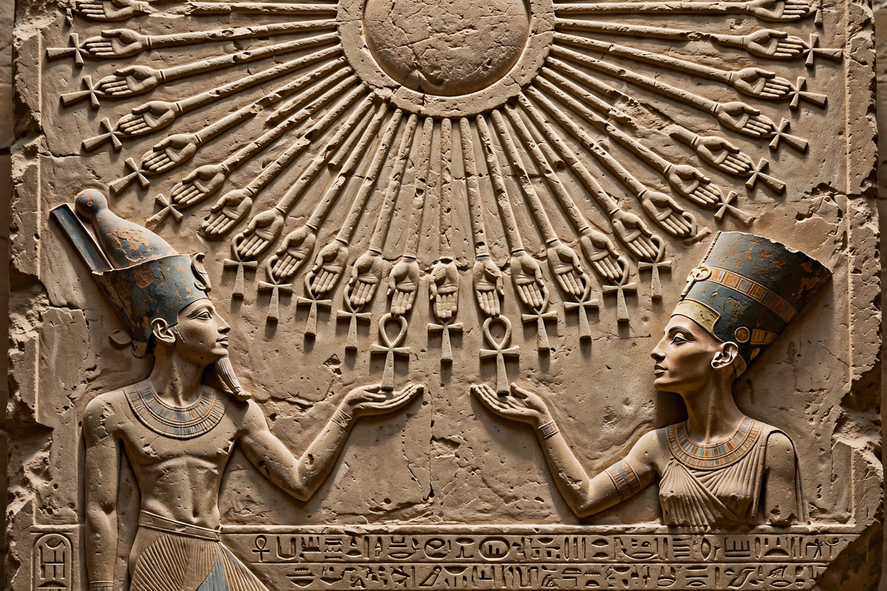

Aten

The Aten (also Aton, Atonu, Itn) is the disc of the sun, deified in ancient Egyptian religion. It became the central focus of the religious system of the 18th-Dynasty pharaoh Akhenaten (r. 1353–1336 BC), in a movement known as Atenism, sometimes described as the earliest monotheism.
From aspect to sole god
The word aten originally meant simply the sun's disc and appeared as an aspect of the sun god Ra. Under Amenhotep III the disc gained prominence, and his son Akhenaten elevated it above all other gods: temples to the traditional pantheon were closed, their names — above all that of Amun — were hacked from monuments, and the king changed his own name from Amenhotep to Akhenaten, "effective for the Aten". The god was depicted not in human form but as a disc whose rays end in hands holding ankhs to the royal family's nostrils. Akhenaten's Great Hymn to the Aten, inscribed in the tomb of Ay at Amarna, celebrates the disc as creator and sustainer of all life in all lands.
Character of the cult
Whether Atenism was true monotheism or a royal cult in which the king and Nefertiti were the Aten's only intermediaries remains debated. The religion offered no mythology, no images of the god beyond the disc, and little role for ordinary people, who venerated the royal family instead.
Aftermath
After Akhenaten's death the old cults were restored under Tutankhamun — whose name changed from Tutankhaten — and later pharaohs such as Horemheb dismantled the Aten temples and erased the Amarna kings from official lists. Atenism thus vanished almost completely, though scholars have long debated possible influences on later monotheisms.